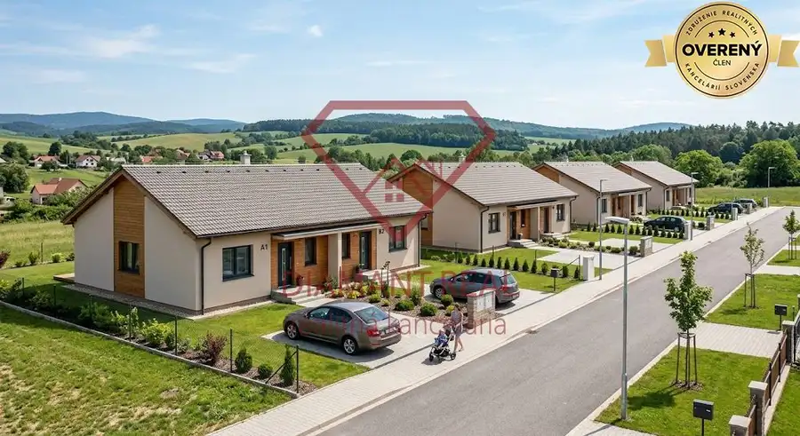
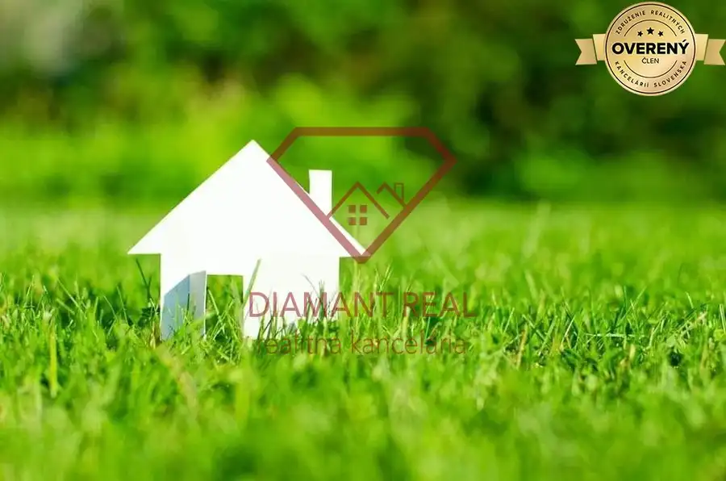

Na predaj stavebný pozemok 3655 m2 Zemianske Sady okr. Galanta
Galanta
- Plocha3655 m²
O nehnuteľnosti
Mgr. Helena Štrebová – RK Diamant Real má pre Vás v ponuke starý vidiecky dom, chalupu v obci Zemianske Sady. Dom stojí na krásnom rozľahlom pozemku o veľkosti 3655 m2, z toho je stavebný pozemok o rozlohe 706m2.
Pozemok ďalej pokračuje do rozľahlej záhrady s výmerou 2949m2 a končí potokom. Za potokom je parcela cca 900m2, ktorá je v dlhodobom užívaní (možnosť výsadby plodín, alebo ako lúka). Ďalej sú už len polia.
Šírka pozemku je cca 15m.
Stred záhrady je v kopci, kde máte prenádherný idylický výhľad na juho-západnú stranu, vidíte tak doďaleka na mierne zvlnenú panorámu prírody zaliatu slnkom. Po postavení altánku si budete vychutnávať západ slnka každý večer. V záhrade sa nachádzajú rôzne ovocné a úžitkové stromy.
Dom o rozmeroch 16 x 6,3 m je postavený zo zmiešaného materiálu – pálená tehla a hlina. Dom je suchý. Bočná stena-tzv. gánok bol vymenený za novú stenu s plastovými oknami + bočné terasové dvere. Stena zatiaľ nie je omietnutá. Okno v prednej izbe je vymenené za plastové, taktiež zadné dvere sú vymenené za nové plastové. Strecha – plechová, vymenená pred cca 15rokmi.
Dispozícia – dlhá vstupná chodba (bývalý gánok) z ktorej sa ide do kuchyne, z kuchyne do strednej izby a odtiaľ do prednej izby. Ďalej sa z chodby vstupuje do veľkej zadnej izby, ktorá mala slúžiť po dorobení ako kúpeľňa. Z chodby sa dá vystúpiť na povalu, bokom cez terasové dvere na dvor alebo zadnými dverami do hospodárskej časti.
V dome je centrálne plynové kúrenie(radiátory). Dom je obývateľný, ale vhodný na rekonštrukciu, prípadne je možné vzhľadom na jeho vek a veľký pozemok postaviť nové bývanie podľa vlastných predstáv.
Dom je napojený na vodovodnú, plynovú aj elektrickú prípojku. Odpad je zvedený do septiku, avšak v obci už je zriadená kanalizácia a nie je problém sa napojiť.
Na pozemku sa nachádza veľká pivnica, kopaná studňa, prístrešok na náradie a suché WC.
Dom bol do donedávna obývaný a teda aj vykurovaný. Bývali tu slušný a čistotný ľudia.
V Záhrade sa chovali každý rok ovečky.
V obci je výborná občianska vybavenosť. Nachádza sa tu škôlka, základná škola, Jednota, pošta, obecný úrad, lekár, veľké detské ihriská. Veľmi dobrá lokalita a spojenie do okolitých miest – Hlohovec -13km(R1), Sereď-15km, Nitra – 28km, Trnava – 32km. Napojenie na D1-Pata- 6km.
V cene máte kompletný realitno – právny servis a k tomu Vám bezplatne zabezpečíme najvýhodnejšiu hypotéku na trhu.
Všetky naše ponuky nájdete na www.helenastrebova.sk alebo www.diamantreal.sk
Kontakt : - som tu pre VÁS.
Mgr. Helena Štrebová
Licencovaná, certifikovaná Realitná a Hypotekárna špecialistka.
Majiteľka a konateľka RK Diamant Real s.r.o
Parametre
| Rozloha pozemku | 3655 m² |
|---|---|
| Inžinierske siete | áno |
| Prístupová cesta | asfaltová cesta |
| Dátum zverejnenia | 26. 6. 2025 |
Kde to je
Mohlo by Vás zaujímať

Pozemok2 220 000 €Na predaj IDEÁLNY investičný pozemok s BONUSOM v obci Vlčany. Vlčany 2500 m² Hľadáte pozemok ktorý má viac ako 8 árov v obci Vlčany ? Mgr. Helena Štrebová – 19 rokov v realitách - RK Diamant Real má pre Vás v ponuke pozemok,…
Pozemok 58 320 €Na predaj slnečný stavebný pozemok v obci Žihárec okr. Šaľa. Žihárec 1944 m² IBA u nás DOHODA na CENE VŽDY istá ! pretože spolupracujete s PROFESIONÁLNOU a LICENCOVANOU realitnou kanceláriou ! Rk Diamant Real má pre Vás v…